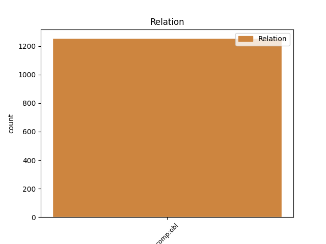

Distribution of features within this leaf

Agreement Rules sorted by frequency.
- When the dependent token is the oblique complements(comp:obl) of the head token, and the dependent token is NOUN.
1 Καὶ _ _ _ _ 0 _ _ _
2 ἦλθεν _ _ _ _ 0 _ _ _
3 εἷς _ _ _ _ 0 _ _ _
4 ἐκ _ _ _ _ 0 _ _ _
5 τῶν _ _ _ _ 0 _ _ _
6 ἑπτὰ _ _ _ _ 0 _ _ _
7 ἀγγέλων _ _ _ _ 0 _ _ _
8 τῶν _ _ _ _ 0 _ _ _
9 ἐχόντων _ _ _ _ 0 _ _ _
10 τὰς _ _ _ _ 0 _ _ _
11 ἑπτὰ _ _ _ _ 0 _ _ _
12 φιάλας _ _ _ _ 0 _ _ _
13 τῶν _ _ _ _ 0 _ _ _
14 γεμόντων γέμω VERB V- Case=Gen|Gender=Fem|Number=Plur|Tense=Pres|VerbForm=Part|Voice=Act 0 _ _ _
15 τῶν _ _ _ _ 0 _ _ _
16 ἑπτὰ _ _ _ _ 0 _ _ _
17 πληγῶν πληγή NOUN Nb Case=Gen|Gender=Fem|Number=Plur 14 comp:obl _ ref=REV_21.9
18 τῶν _ _ _ _ 0 _ _ _
19 ἐσχάτων _ _ _ _ 0 _ _ _
20 καὶ _ _ _ _ 0 _ _ _
21 ἐλάλησεν _ _ _ _ 0 _ _ _
22 μετ’ _ _ _ _ 0 _ _ _
23 ἐμοῦ _ _ _ _ 0 _ _ _
24 λέγων _ _ _ _ 0 _ _ _
1 καὶ _ _ _ _ 0 _ _ _
2 τελειωθεὶς _ _ _ _ 0 _ _ _
3 ἐγένετο _ _ _ _ 0 _ _ _
4 πᾶσιν _ _ _ _ 0 _ _ _
5 τοῖς _ _ _ _ 0 _ _ _
6 ὑπακούουσιν ὑπακούω VERB V- Case=Dat|Gender=Masc|Number=Plur|Tense=Pres|VerbForm=Part|Voice=Act 0 _ _ _
7 αὐτῷ αὐτός PRON Pp Case=Dat|Gender=Masc|Number=Sing|Person=3|PronType=Prs 6 comp:obl _ ref=HEB_5.9
8 αἴτιος _ _ _ _ 0 _ _ _
9 σωτηρίας _ _ _ _ 0 _ _ _
10 αἰωνίου _ _ _ _ 0 _ _ _
11 προσαγορευθεὶς _ _ _ _ 0 _ _ _
12 ὑπὸ _ _ _ _ 0 _ _ _
13 τοῦ _ _ _ _ 0 _ _ _
14 θεοῦ _ _ _ _ 0 _ _ _
15 ἀρχιερεὺς _ _ _ _ 0 _ _ _
16 κατὰ _ _ _ _ 0 _ _ _
17 τὴν _ _ _ _ 0 _ _ _
18 τάξιν _ _ _ _ 0 _ _ _
19 Μελχισέδεκ _ _ _ _ 0 _ _ _
1 ἐγένετο _ _ _ _ 0 _ _ _
2 δέ _ _ _ _ 0 _ _ _
3 μοι _ _ _ _ 0 _ _ _
4 πορευομένῳ _ _ _ _ 0 _ _ _
5 καὶ _ _ _ _ 0 _ _ _
6 ἐγγίζοντι ἐγγίζω VERB V- Case=Dat|Gender=Masc|Number=Sing|Tense=Pres|VerbForm=Part|Voice=Act 0 _ _ _
7 τῇ _ _ _ _ 0 _ _ _
8 Δαμασκῷ Δαμασκός PROPN Ne Case=Dat|Gender=Fem|Number=Sing 6 comp:obl _ ref=ACTS_22.6
9 περὶ _ _ _ _ 0 _ _ _
10 μεσημβρίαν _ _ _ _ 0 _ _ _
11 ἐξαίφνης _ _ _ _ 0 _ _ _
12 ἐκ _ _ _ _ 0 _ _ _
13 τοῦ _ _ _ _ 0 _ _ _
14 οὐρανοῦ _ _ _ _ 0 _ _ _
15 περιαστράψαι _ _ _ _ 0 _ _ _
16 φῶς _ _ _ _ 0 _ _ _
17 ἱκανὸν _ _ _ _ 0 _ _ _
18 περὶ _ _ _ _ 0 _ _ _
19 ἐμέ _ _ _ _ 0 _ _ _
Disagree Examples:
1 Περσέων _ _ _ _ 0 _ _ _
2 μέν _ _ _ _ 0 _ _ _
3 νυν _ _ _ _ 0 _ _ _
4 οἱ _ _ _ _ 0 _ _ _
5 λόγιοι _ _ _ _ 0 _ _ _
6 Φοίνικας _ _ _ _ 0 _ _ _
7 αἰτίους αἴτιος ADJ A- Case=Acc|Degree=Pos|Gender=Masc|Number=Plur 0 _ _ _
8 φασὶ _ _ _ _ 0 _ _ _
9 γενέσθαι _ _ _ _ 0 _ _ _
10 τῆς _ _ _ _ 0 _ _ _
11 διαφορῆς διαφορά NOUN Nb Case=Gen|Gender=Fem|Number=Sing 7 comp:obl _ ref=1.1.1
1 τὸ _ _ _ _ 0 _ _ _
2 δέ _ _ _ _ 0 _ _ _
3 οἱ οὗ PRON Pp Case=Dat|Gender=Fem|Number=Sing|Person=3|PronType=Prs 13 comp:obl _ ref=1.1.3
4 οὔνομα _ _ _ _ 0 _ _ _
5 εἶναι _ _ _ _ 0 _ _ _
6 κατὰ _ _ _ _ 0 _ _ _
7 τὸ _ _ _ _ 0 _ _ _
8 αὐτὸ _ _ _ _ 0 _ _ _
9 τὸ _ _ _ _ 0 _ _ _
10 καὶ _ _ _ _ 0 _ _ _
11 Ἕλληνές _ _ _ _ 0 _ _ _
12 λέγουσι _ _ _ _ 0 _ _ _
13 Ἰοῦν Ἰώ PROPN Ne Case=Acc|Gender=Fem|Number=Sing 0 _ _ _
14 τὴν _ _ _ _ 0 _ _ _
15 Ἰνάχου _ _ _ _ 0 _ _ _
1 ταῦτα _ _ _ _ 0 _ _ _
2 μὲν _ _ _ _ 0 _ _ _
3 δὴ _ _ _ _ 0 _ _ _
4 ἴσα _ _ _ _ 0 _ _ _
5 πρὸς _ _ _ _ 0 _ _ _
6 ἴσα _ _ _ _ 0 _ _ _
7 σφι _ _ _ _ 0 _ _ _
8 γενέσθαι _ _ _ _ 0 _ _ _
9 μετὰ _ _ _ _ 0 _ _ _
10 δὲ _ _ _ _ 0 _ _ _
11 ταῦτα _ _ _ _ 0 _ _ _
12 Ἕλληνας _ _ _ _ 0 _ _ _
13 αἰτίους αἴτιος ADJ A- Case=Acc|Degree=Pos|Gender=Masc|Number=Plur 0 _ _ _
14 τῆς _ _ _ _ 0 _ _ _
15 δευτέρης _ _ _ _ 0 _ _ _
16 ἀδικίης ἀδικία NOUN Nb Case=Gen|Gender=Fem|Number=Sing 13 comp:obl _ ref=1.2.1
17 γενέσθαι _ _ _ _ 0 _ _ _
1 οὕτω _ _ _ _ 0 _ _ _
2 μὲν _ _ _ _ 0 _ _ _
3 Πέρσαι _ _ _ _ 0 _ _ _
4 λέγουσι _ _ _ _ 0 _ _ _
5 γενέσθαι _ _ _ _ 0 _ _ _
6 καὶ _ _ _ _ 0 _ _ _
7 διὰ _ _ _ _ 0 _ _ _
8 τὴν _ _ _ _ 0 _ _ _
9 Ἰλίου _ _ _ _ 0 _ _ _
10 ἅλωσιν _ _ _ _ 0 _ _ _
11 εὑρίσκουσι _ _ _ _ 0 _ _ _
12 σφίσι σφεῖς PRON Pp Case=Dat|Gender=Masc|Number=Plur|Person=3|PronType=Prs 13 comp:obl _ ref=1.5.1
13 ἐοῦσαν εἰμί AUX V- Case=Acc|Gender=Fem|Number=Sing|Tense=Pres|VerbForm=Part|Voice=Act 0 _ _ _
14 τὴν _ _ _ _ 0 _ _ _
15 ἀρχήν _ _ _ _ 0 _ _ _
16 τῆς _ _ _ _ 0 _ _ _
17 ἔχθρης _ _ _ _ 0 _ _ _
18 τῆς _ _ _ _ 0 _ _ _
19 ἐς _ _ _ _ 0 _ _ _
20 τοὺς _ _ _ _ 0 _ _ _
21 Ἕλληνας _ _ _ _ 0 _ _ _
1 οὐ _ _ _ _ 0 _ _ _
2 γὰρ _ _ _ _ 0 _ _ _
3 ἁρπαγῇ ἁρπαγή NOUN Nb Case=Dat|Gender=Fem|Number=Sing 5 comp:obl _ ref=1.5.2
4 σφέας _ _ _ _ 0 _ _ _
5 χρησαμένους χράω VERB V- Aspect=Perf|Case=Acc|Gender=Masc|Number=Plur|Tense=Past|VerbForm=Part|Voice=Mid 0 _ _ _
6 λέγουσι _ _ _ _ 0 _ _ _
7 ἀγαγεῖν _ _ _ _ 0 _ _ _
8 αὐτήν _ _ _ _ 0 _ _ _
9 ἐς _ _ _ _ 0 _ _ _
10 Αἴγυπτον _ _ _ _ 0 _ _ _
11 ἀλλ’ _ _ _ _ 0 _ _ _
12 ὡς _ _ _ _ 0 _ _ _
13 ἐν _ _ _ _ 0 _ _ _
14 τῷ _ _ _ _ 0 _ _ _
15 Ἄργεϊ _ _ _ _ 0 _ _ _
16 ἐμίσγετο _ _ _ _ 0 _ _ _
17 τῷ _ _ _ _ 0 _ _ _
18 ναυκλήρῳ _ _ _ _ 0 _ _ _
19 τῆς _ _ _ _ 0 _ _ _
20 νέος _ _ _ _ 0 _ _ _